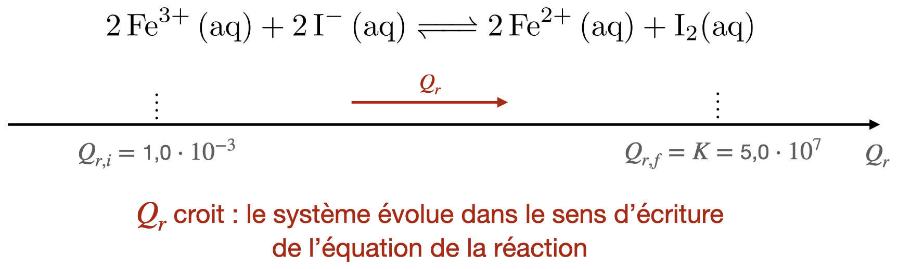
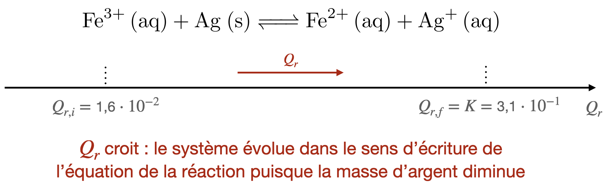
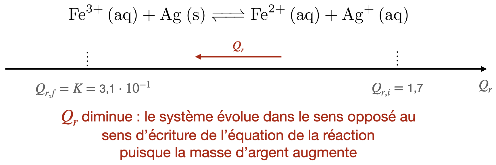
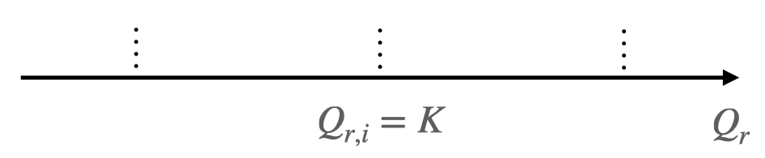
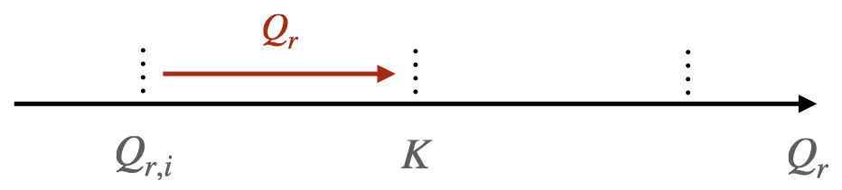
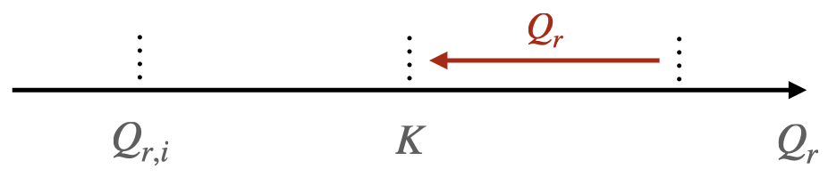

Rappel : quotient de réaction
- Le quotient de réaction est une grandeur dont la valeur dépend de l’état du système considéré.
- L’expression du quotient de réaction dépend de l’écriture de l’équation de la réaction.
- La valeur du quotient de réaction dans l’état d’équilibre est indépendante des conditions initiales choisies pour la transformation. Cette valeur ne dépend que de la température.
- On appelle constante d’équilibre associée à une réaction chimique la valeur du quotient de réaction dans l’état d’équilibre de la transformation modélisée par la réaction chimique.
Évolution spontanée d’un système chimique
Analyse d’une réaction d’oxydoréduction
On dispose de deux solutions aqueuses. La solution (1) contient des ions fer (II) $\ce{Fe^{2+} (aq)}$ et des ions fer (III) $\ce{Fe^{3+} (aq)}$, en concentrations $[\ce{Fe^{2+}}]=[\ce{Fe^{3+}}] = \pu{0,10 mol.L-1}$.
La solution (2) contient des ions iodure $\ce{I^- (aq)}$ et du diiode $\ce{I2 (aq)}$, en concentrations $[\ce{I^-}] = \pu{1,0 mol.L-1}$ et $[\ce{I2}] = \pu{1,0e-3 mol.L-1}$.
- Dans un bécher, mélanger $V_1 = \pu{10 mL}$ de solution (1) et $V_2 = \pu{10 mL}$ de solution (2).
Agiter et observer l’évolution du système.
Les couples oxydant/réducteur en jeu sont : $\ce{Fe^{3+}/Fe^{2+}}$ et $\ce{I2/I^-}$.
Résultat expérimental
Il se forme lentement du diiode.
- Écrire l’équation de la réaction modélisant la transformation.
Réponse
$$ \ce{ 2 Fe^{3+} (aq) + 2 I^- (aq) <=> 2 Fe^{2+} (aq) + I2(aq) } $$
- Calculer $Q_{r,i}$, la valeur du quotient de réaction dans l’état initial de la transformation.
Réponse
$$
Q_{r,i} = \dfrac{\left( \dfrac{[\ce{Fe^{2+}}]_i}{C^o} \right)^2 \cdot \left( \dfrac{[\ce{I2}]_i}{C^o} \right)}{ \left( \dfrac{[\ce{Fe^{3+}}]_i}{C^o} \right)^2 \cdot \left( \dfrac{[\ce{I-}]_i}{C^o} \right)^2}
$$
avec $C^o = \pu{1,00 mol.L-1}$.
On a donc
$$
Q_{r,i} = \dfrac{ [\ce{Fe^{2+}}]_i^2 \cdot [\ce{I2}]_i \cdot C^o }{ [\ce{Fe^{3+}}]_i^2 \cdot [\ce{I-}]_i^2 }
$$
Comme
-
$[\ce{Fe^{2+}}]_i = \dfrac{n_i(\ce{Fe^{2+}})}{V_S} = \dfrac{[\ce{Fe^{2+}}] \cdot V_1}{V_1 + V_2}$
A.N : $[\ce{Fe^{2+}}]_i = \dfrac{\pu{0,10 mol.L-1} \times \pu{10e-3 L}}{\pu{10e-3 L} + \pu{10e-3 L}}= \pu{5,0e-2 mol.L-1}$.
-
$[\ce{Fe^{3+}}]_i = \dfrac{n_i(\ce{Fe^{3+}})}{V_S} = \dfrac{[\ce{Fe^{3+}}] \cdot V_1}{V_1 + V_2}$
A.N : $[\ce{Fe^{3+}}]_i = \dfrac{\pu{0,10 mol.L-1} \times \pu{10e-3 L}}{\pu{10e-3 L} + \pu{10e-3 L}}= \pu{5,0e-2 mol.L-1}$.
-
$[\ce{I-}]_i = \dfrac{n_i(\ce{I-})}{V_S} = \dfrac{[\ce{I-}] \cdot V_2}{V_1 + V_2}$
A.N : $[\ce{I-}]_i = \dfrac{\pu{1,0 mol.L-1} \times \pu{10e-3 L}}{\pu{10e-3 L} + \pu{10e-3 L}}= \pu{5,0e-1 mol.L-1}$.
-
$[\ce{I2}]_i = \dfrac{n_i(\ce{I2})}{V_S} = \dfrac{[\ce{I2}] \cdot V_2}{V_1 + V_2}$
A.N : $[\ce{I2}]_i = \dfrac{\pu{1,0e-3 mol.L-1} \times \pu{10e-3 L}}{\pu{10e-3 L} + \pu{10e-3 L}}= \pu{5,0e-4 mol.L-1}$.
$$ Q_{r,i} = \dfrac{ \left( \pu{5,0e-2 mol.L-1} \right)^2 \times \pu{5,0e-4 mol.L-1} \times \pu{1,00 mol.L-1} }{ \left( \pu{5,0e-2 mol.L-1} \right)^2 \times \left( \pu{5,0e-1 mol.L-1} \right)^2 } = \pu{2,0e-3} $$
- La valeur de la constante d’équilibre associée à la réaction d’équation $$ \ce{ 2 Fe^{3+} (aq) + 2 I^- (aq) <=> 2 Fe^{2+} (aq) + I2(aq) } $$ vaut approximativement $K=\pu{5e7}$. Comparer $K$ et $Q_{r,i}$.
Réponse
$ \dfrac{Q_{r,i}}{K} = \dfrac{\pu{2,0e-3}}{\pu{5e7}} = \pu{4e-11}< 1$. Le quotient de réaction dans l’état initial est inférieur à la constante d’équilibre.
- Résumer l’évolution du système chimique à l’aide d’un schéma faisant intervenir un axe gradué en fonction des valeurs du quotient de réaction $Q_r$.
Réponse
La transformation s’est déroulée dans le sens d’écriture de la réaction chimique 
Évolution d’un système d’oxydoréduction
On ajoute de la poudre d’argent en excès à une solution aqueuse de nitrate de fer (III) de concentration égale à $C= \pu{0,0100 mol.L-1}$. On agite le système, à 25 °C, jusqu’à ce que l’équilibre soit atteint. Les concentrations des espèces dissoutes valent alors: $[\ce{Fe^{3+}}]_{eq} = \pu{3,0e-4 mol.L-1}$ ; $[\ce{Fe^{2+}}]_{eq} = [\ce{Ag+}]_{eq} = \pu{9,7e-3 mol.L-1}$.
-
Écrire l’équation de la réaction des ions fer III avec l’argent. De quelle nature est-elle ?
-
Déterminer la valeur de la constante d’équilibre $K$ associée à cette réaction.
On prépare une solution en introduisant dans de l’eau distillée $m_1 = \pu{1,21 g}$ de nitrate de fer (III) nonahydraté ($\ce{Fe(NO3)3, 9 H2O}$), $m_2 = \pu{0,87 g}$ de sulfate de fer (II) heptahydraté ($\ce{FeSO4, 7 H2O}$), $m_3 = \pu{0,64 g}$ de nitrate d’argent ($\ce{AgNO3}$) et de la poudre d’argent. Le volume final $V$ de la solution obtenue est égal à $\pu{250 mL}$.
On constate que la masse d’argent métallique diminue au cours de l’expérience.
- (Facultatif) Écrire les équations de dissolution des trois solides ioniques.
On peut déterminer (faites-le à la maison !) que les concentrations initiales des espèces dissoutes dans ce système sont :
- $[\ce{Fe^{3+}}]_i = \pu{1,20e-2 mol.L-1}$ ;
- $[\ce{Fe^{2+}}]_i = \pu{1,25e-2 mol.L-1}$ ;
- $[\ce{Ag+}]_i = \pu{1,51e-2 mol.L-1}$.
-
Calculer la valeur du quotient de réaction dans l’état initial et la comparer à la valeur de la constante d’équilibre.
Rappel : la réaction qui peut se dérouler dans le milieu est celle dont l’équation a été écrite à la question 1. -
Résumer l’évolution du système chimique à l’aide d’un schéma faisant intervenir un axe gradué en fonction des valeurs du quotient de réaction $Q_r$.
On introduit dans un erlenmeyer $V_1 = \pu{30,0 mL}$ de solution de nitrate de fer (III) à $C_1 = \pu{1,0e-4 mol.L-1}$, $V_2 = \pu{50,0 mL}$ de solution de sulfate de fer (II) à $C_2 = \pu{5,0e-2 mol.L-1}$, $V_3 = \pu{20,0 mL}$ de solution de nitrate d’argent à $C_3 = \pu{1,0e-2 mol.L-1}$ et un peu de poudre d’argent.
On constate que la masse d’argent métallique augmente au cours de l’expérience.
On peut déterminer (faites-le à la maison !) que les concentrations initiales des espèces dissoutes dans ce système sont :
- $[\ce{Fe^{3+}}]_i = \pu{3,0e-5 mol.L-1}$ ;
- $[\ce{Fe^{2+}}]_i = \pu{2,5e-2 mol.L-1}$ ;
- $[\ce{Ag+}]_i = \pu{2,0e-3 mol.L-1}$.
-
Calculer la valeur du quotient de réaction dans l’état initial et la comparer à la valeur de la constante d’équilibre.
Rappel : la réaction qui peut se dérouler dans le milieu est celle dont l’équation a été écrite à la question 1. -
Résumer l’évolution du système chimique à l’aide d’un schéma faisant intervenir un axe gradué en fonction des valeurs du quotient de réaction $Q_r$.
Réponses
-
La réaction qui peut se produire a pour équation : $$ \ce{Fe^{3+} (aq) + Ag (s) <=> Fe^{2+} (aq) + Ag+ (aq)} $$ Il y a échange d’électrons puisqu’on passe de l’argent à l’ion argent, c’est donc une réaction d’oxydoréduction.
-
La constante d’équilibre $K$ associée à cette réaction est le quotient de réaction à l’équilibre, donc $$ K = Q_{r,eq} = \dfrac{\left( \dfrac{[\ce{Fe^{2+}}]_{eq}}{C^o} \right) \cdot \left( \dfrac{[\ce{Ag+}]_{eq}}{C^o} \right)}{ \left( \dfrac{[\ce{Fe^{3+}}]_{eq}}{C^o} \right)} = \dfrac{[\ce{Fe^{2+}}]_{eq} \cdot [\ce{Ag+}]_{eq}}{[\ce{Fe^{3+}}]_{eq} \cdot C^o} $$ A.N. $K = \dfrac{\pu{9,7e-3 mol.L-1} \times \pu{9,7e-3 mol.L-1}}{\pu{3,0e-4 mol.L-1} \times \pu{1,00 mol.L-1}} = \pu{3,1e-1}$
-
Les solides donnés dans l’énoncé sont hydratés. On ne tient pas compte des molécules d’eau dans les équations de dissolution. $$ \ce{ Fe(NO3)3 (s) –>[eau] Fe^{3+} (aq) + 3 NO3^- (aq) } $$ $$ \ce{ FeSO4 (s) –>[eau] Fe^{2+} (aq) + SO4^{2-} (aq) } $$ $$ \ce{ AgNO3 (s) –>[eau] Ag+ (aq) + NO3^- (aq) } $$
-
$Q_{r,i} = \dfrac{\pu{1,25e-2 mol.L-1} \times \pu{1,51e-2 mol.L-1}}{\pu{1,20e-2 mol.L-1} \times \pu{1,00 mol.L-1}} = \pu{1,6e-2}$.
-
$\dfrac{Q_{r,i}}{K} = \dfrac{\pu{1,6e-2}}{\pu{3,1e-1}} = \pu{5,2e-2} < 1$. Le quotient de réaction dans l’état initial est inférieur à la constante d’équilibre.
-
La transformation s’est déroulée dans le sens d’écriture de la réaction chimique puisque la masse d’argent a diminué. 
-
- $Q_{r,i} = \dfrac{\pu{2,5e-2 mol.L-1} \times \pu{2,0e-3 mol.L-1}}{\pu{3,0e-5 mol.L-1} \times \pu{1,00 mol.L-1}} = \pu{1,7}$.
- $\dfrac{Q_{r,i}}{K} = \dfrac{\pu{1,7}}{\pu{3,1e-1}} = \pu{5,5} > 1$. Le quotient de réaction dans l’état initial est supérieur à la constante d’équilibre.
- La transformation s’est déroulée dans le sens opposé au sens d’écriture de la réaction chimique puisque la masse d’argent a augmenté. 
Critère d’évolution spontanée d’un système
Réponse
Critère d’évolution spontanée d’un système
Pour une réaction chimique donnée :
-
Si le quotient de réaction initial est égal à la constante d’équilibre, soit $Q_{r,i} = K$, le système est déjà à l’équilibre : il n’y a pas d’évolution. 
-
Lorsque le quotient de réaction initial $Q_{r,i}$ est différent de la constante d’équilibre K, $Q_{r,i} \neq K$ le système chimique évolue spontanément vers un état d’équilibre.
-
Si $Q_{r,i} < K$, le système évolue dans le sens direct de l’écriture de l’équation de la réaction. 
-
Si $Q_{r,i} > K$, le système évolue dans le sens inverse de l’écriture de l’équation de la réaction. 
-
Application
On considère un système contenant du zinc et de l’aluminium métalliques, des ions zinc (II) à la concentration $C = \pu{1,5e-1 mol.L-1}$ et des ions aluminium (III) à la concentration $C’= \pu{2,0e-3 mol.L-1}$.
Les couples oxydant/réducteur qui interviennent lors de la réaction sont : $\ce{Al^{3+}/Al}$ et $\ce{Zn^{2+}/Zn}$.
-
Écrire l’équation de la réaction entre l’aluminium métallique et les ions zinc.
-
Donner l’expression du quotient de réaction associé à cette équation de réaction.
La constante d’équilibre $K$ associée à la réaction d’équation écrite à la question 1. est : $K = \pu{4e93}$.
-
Indiquer comment ce système évolue spontanément.
-
Répondre à la même question si, à présent, $C = \pu{2,0e-8 mol.L-1}$ et $C’= \pu{1,0 mol.L-1}$.
Réponses
-
$\ce{2 Al (s) + 3 Zn^{2+} (aq) <=> 2 Al^{3+} (aq) + 3 Zn (s)}$
-
$ Q_r = \dfrac{\left( \dfrac{[\ce{Al^{3+}}]}{C^o} \right)^2}{\left( \dfrac{[\ce{Zn^{2+}}]}{C^o} \right)^3} = \dfrac{[\ce{Al^{3+}}]^2 \cdot C^o}{[\ce{Zn^{2+}}]^3} $ avec $C^o = \pu{1,00 mol.L-1}$.
-
$Q_{r,i} = \dfrac{\left( \pu{2,0e-3 mol.L-1} \right)^2 \times \pu{1,00 mol.L-1}}{\left( \pu{1,5e-1 mol.L-1} \right)^3} = \pu{1,2e-3}$
$Q_{r,i} < K$, le système évolue dans le sens d’écriture de la réaction chimique ; l’aluminium métallique est consommé. -
$Q_{r,i} = \dfrac{\left( \pu{1,0 mol.L-1} \right)^2 \times \pu{1,00 mol.L-1}}{\left( \pu{2,0e-8 mol.L-1} \right)^3} = \pu{1,3e23}$
$Q_{r,i} < K$, le système évolue dans le sens d’écriture de la réaction chimique ; l’aluminium métallique est consommé.